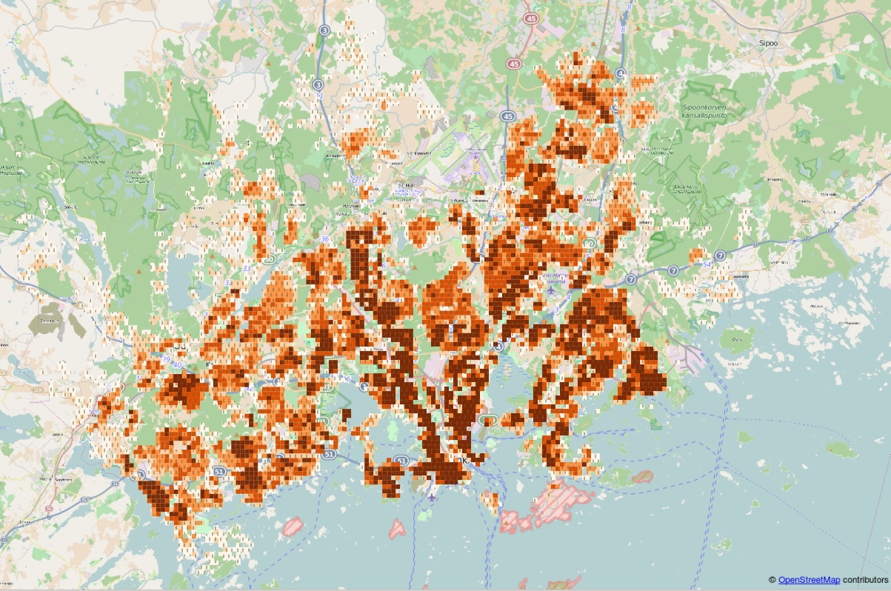
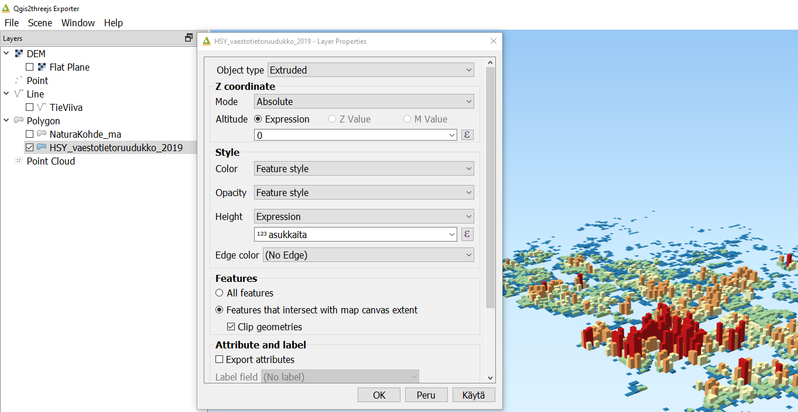
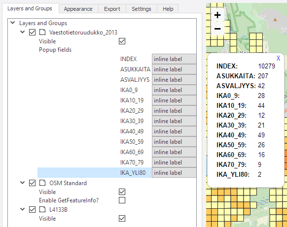

9 Harjoitus 8: QGISin lisäosat
9.1 Harjoituksen sisältö
Harjoituksessa asennetaan muutama QGIS-lisäosa.
9.2 Harjoituksen tavoite
Koulutettava oppii asentamaan QGIS-lisäosia ja ymmärtää niiden toimintaperiaatteet.
9.3 Valmistautuminen
Käynnistä QGIS-ohjelmisto ja avaa uusi QGIS-projekti.
9.4 Lisäosien hallinta
Lisäosia lisätään käyttöön päävalikosta Lisäosat → Hallitse ja asenna lisäosia… -valikon kautta. Valitse Asennettu-välilehti ja saat esille kaikki asennetut lisäosat. Huomaa, että suurinta osaa niistä ei ole aktivoitu. Lisäosien aktivointi lisää erilaisia valikkoja ja paneeleja QGISin käyttöliittymään. Siksi on hyödyllistä piilottaa ne joita ei käytetä.
9.5 QuickMapServices
QuickMapServices (QMS) -lisäosan kautta saat QGISin karttaprojektiin erilaisia taustakarttoja verkosta, kuten OpenStreetMaps, Google Maps tai Bing Maps. Avaa Lisäosat → Hallitse ja asenna lisäosia…, valitse Kaikki-välilehti ja etsi quickmapservices tekstillä:

Paina vielä Install plugin ja paina sen jälkeen Sulje. Uusi valikko tulee päävalikon Verkko alle. Valitse Verkko → QuickMapServices → OSM → OSM Standard. Karttaikkunassa on nyt OpenStreetMap taustakarttana. Lisää karttoja voit etsiä Valitsemalla Verkko → QuickMapServices → Search QMS. Sivupalkkiin avautuu hakuikkuna, josta voit hakea hakusanoilla erilaisia karttoja käyttöösi. Testaa etsiä esimerkiksi Stamen karttoja tai etsi onko omalla tai naapurikunnallasi karttoja palvelussa!

9.6 QuickOSM
Etsi ja asenna QuickOSM-lisäosa. Tällä lisäosalla voit etsiä OpenStreetMapista erilaisia kohteita ja saada ne kartallesi visualisoitavaksi tai analysoitavaksi tasoksi. Lisäosan voit avata Vektori → QuickOSM → QuickOSM. Avautuvassa ikkunassa voit etsiä kohteita avaimen ja arvon kautta. Etsitään esimerkiksi Espoon piknik-paikat. Esiasetuksissa voit etsiä suomeksi, jos aihe löytyy suoraan valikosta. Tässä tapauksessa se löytyy ja täyttää suoraan valikkoon oikean avaimen ja arvon. Lisää vielä oikea kaupunki ja paina oikealta “Suorita kysely”

Kartalle tulee kaksi uutta väliaikaista tasoa: pistemäinen kohde sekä aluekohde piknik-paikoista Espoossa. Voit visualisoida tasot miten haluat. Muista tallentaa tasot erikseen itsellesi, jos haluat käyttää niitä myöhemmin. Paina tasoa hiiren oikealla Vie → Tallenna kohteet nimellä ja valitse muoto sekä minne haluat tiedoston tallentaa.

Tutki, mitä muita kohteita voit löytää OpenStreetMapilta. Testaa löytää esimerkiksi golfkentät tai pyörätiet jostain kaupungista. Jos esiasetuksista ei löydä haluamaasi tasoa, yritä etsiä se avaimen ja arvon avulla.
9.7 Lisätehtävä: Qgis2threejs
Lisää vielä Qgis2threejs-lisäosa. Tämä lisäosa mahdollistaa nopean kolmiulotteisen visualisoinnin luomisen web-selaimelle käyttäen threejs-kirjastoa. Lisäosan valikko tulee myös Verkko-valikkoon. Avaa Qgis2threejs Exporter ja valitse DEM Layer -valikosta korkeusmalliaineisto (tässä L4133B). Valitse sen jälkeen Polygon-kohdan alta väestötietoruudukkoaineisto ja tuplaklikkaa sitä avataksesi asetukset. Aseta Z-coordinate kohdan Mode-asetukseksi Relative to “L4133B” layer ja Height-kentän arvoksi asukkaita-kentän arvo.

Voit tarkastella visualisointia esikatseluikkunassa tai exportoida sen html-tiedostoksi jolloin sen voi avata selaimella.
9.8 Lisätehtävä: Qgis2web
Qgis2web -lisäosa on helppokäyttöinen lisäosa verkkokartan luomista varten. Sillä voi tuottaa verkkokarttoja hyödyntäen Leaflet- tai OpenLayers-kirjastoja. Qgis2web on hyödyllinen apuväline näiden kirjastojen opetteluun ja verkkokarttajulkaisujen tekemiseen. Avaa Qgis2web valikosta Verkko → Qgis2web → Create web map. Valitse väestötietoruudukko-aineiston kentille Popup fields -kohdan alta Inline label, ja klikkaa Update preview. Kun kartta on päivittynyt, klikkaa ruudukkoa.

Vaihda Appearance-välilehdelle ja muuta asetukset kuvan mukaisesti:

Paina lopulta Export tallentaaksesi kartan HTML-tiedostoon. Tiedosto aukeaa automaattisesti selaimelle. Kokeile verkkokartassasi etsiä osoitteita ja käyttää mittaustyökalua.
Psst! Muista tallentaa QGIS-projekti harjoituksen lopuksi.